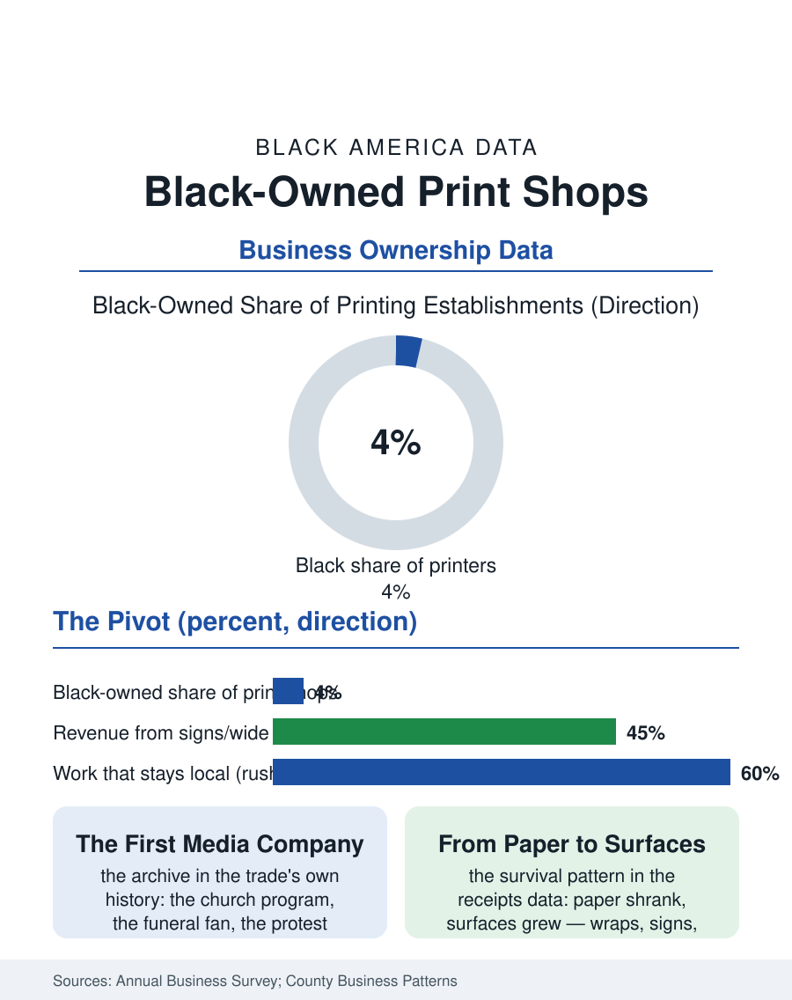

Black Business
The First Media Company: Black-Owned Print Shops
The job printer was the segregated city's information infrastructure, and the survivors pivoted from paper to surfaces, wraps, signs, and labels. The print file.

The Black-owned print shop was the community's first media company: the job printer who produced the church programs, the funeral fans, the campaign posters, and the newspapers' supplements was the information infrastructure of the segregated city. The business census counts the survivors in the hundreds, a trade the digital era cut in half and then, in the packaging and signage niches, partly rebuilt. This article reads the print file.
Programs, Fans, and Posters
The historical file is the community's documentary record itself: much of what the archives hold of ordinary Black civic life, the church anniversary program, the lodge's souvenir journal, the funeral program that is the family's printed genealogy, the protest poster's urgent run, came off a Black printer's press, and the trade's oral histories preserve the printer's civic role, the man who knew every organization's officers and every family's dates because he set them in type. The newspaper connection ran deep: the Black press's own print shops took the job work that sustained them between editions, and the job shop without a paper lived on the same institutional diet, the churches, the schools, the funeral homes, the politicians, a client list that was the community's directory. The technology transitions hit the trade in waves, offset to digital to the online platform, each cutting the local shop's share of its own neighborhood's printing, the church program designed on a phone and printed by a national platform's plant being the current era's emblematic loss. The work that remains local is the work whose deadline or whose physicality defeats the platform: the funeral program needed by Saturday, the banner, the vehicle wrap, the building sign, the book of the family's reunion produced with a care the upload form cannot specify.
The Sign and Packaging Pivot
The survivors' pivot is the file's business story: from paper to surfaces. The wide-format printer, the vinyl cutter, and the installation crew convert the print shop into the sign and graphics company of the owned-sign file's neighbor trade, printing the wraps that turn the food truck and the delivery van into media, the window graphics of the corridor's retail, the event backdrops of the step-and-repeat economy. Packaging is the second pivot, the short-run labels and boxes for the Black product entrepreneurs of the consumer brand files, the candle and sauce and cosmetic lines whose founders need five hundred professional labels rather than fifty thousand, a niche the great packaging plants cannot serve and the digital press serves exactly. The census data reflect the combined trade in the printing and related support categories, Black ownership in the low single digits of establishments, receipts concentrated in the quick-print and graphics segments, the employer firms a minority but a substantial one, since the equipment's cost floors the operation at a scale above the home business. The public market contributes the file's steadiest contracts, the municipalities' and school districts' printing, ballot materials, and signage, allocated through the procurement systems the business section's other files describe, with the campaign cycle's surge the trade's quadrennial harvest, a revenue pattern the owners plan their equipment purchases around.
The Archive's Future
The print file closes on the trade's double identity: a shrinking industry and an irreplaceable civic function. The funeral program has not been disrupted, and will not be while its production remains a same-week act of love performed by a known printer who knew the deceased, a service whose economics are the relationship's rather than the page rate's. The young founders entering the trade arrive from design rather than the pressroom, their shops digital storefronts whose production partnerships reach the same equipment through the trade's new division of labor, and their client acquisition runs through the social platforms where the corridor's businesses now live. The historical echo is exact: the community's information infrastructure is again being rebuilt by its printers, on new presses. The census counts the establishments in the hundreds and falling on the old categories, rising on the new ones, the classification system chasing the trade's own reinvention. The file's final image is the shop's front window, where the samples have always told the community's year: the graduation banners in May, the reunion books in summer, the campaign signs in fall, the church calendars in December, the whole civic cycle printed in one window for a century, by the hands the census files, with diminishing precision and undiminished cause, under printing.
More in Black Business
Black-Owned Businesses: Counts, Receipts, and the Representation Gap
About 161,000 Black-owned employer firms and three million solo ventures: how the Census Bureau counts Black business ownership, where firms concentrate, and the gap between population share and business share.
Black Median Net Worth: The Wealth Gap in Federal Reserve Data
The Federal Reserve puts Black median family net worth at $44,900, against $285,000 for White families — about 16 cents on the dollar. The widest gap in economic data.
Black Buying Power: The $1.8 Trillion Consumer Economy
Black buying power is estimated at about $1.8 trillion — larger than the economy of most nations. What the figure measures, who produces it, and what it buys.
Source: U.S. Census Bureau, Annual Business Survey and County Business Patterns for printing; Printing Industries of America data.